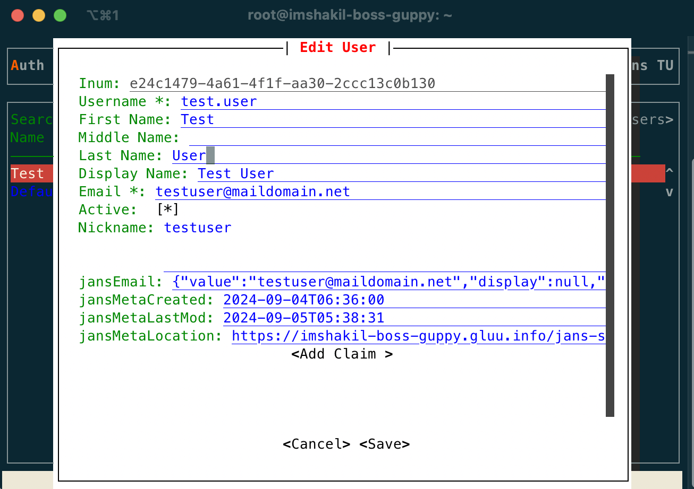

User Management#
The Janssen Server provides multiple configuration tools to perform these tasks.
Use the command line to perform actions from the terminal. Learn how to use Jans CLI here or jump straight to the Using Command Line
Use a fully functional text-based user interface from the terminal. Learn how to use Jans Text-based UI (TUI) here or jump straight to the Using Text-based UI
Use REST API for programmatic access or invoke via tools like CURL or Postman. Learn how to use Janssen Server Config API here or Jump straight to the Using Configuration REST API
Using Command Line#
In the Janssen Server, you can do CRUD operations for user management using its command line tool. To get the details of command line for CRUD operations relevant to User Management, you can find the operation-id under the User task using the Jans CLI in scim mode. The following command line:
jans cli -scim --info User
| Sample Output | |
|---|---|
1 2 3 4 5 6 7 8 9 10 11 12 13 14 15 16 17 18 19 20 21 22 23 24 25 26 27 28 29 30 31 32 33 34 35 36 37 38 39 40 41 42 43 44 45 46 47 48 49 | |
Get Users List#
This operation is used to get list of the users and its properties. The following command line:
jans cli -scim --operation-id get-users
| Sample Output | |
|---|---|
1 2 3 4 5 6 7 8 9 10 11 12 13 14 15 16 17 18 19 20 21 22 23 24 25 26 27 28 29 30 31 32 33 34 35 36 37 38 39 40 41 42 43 44 | |
As shown in the output for --info command, get-users operation-id also supports parameters for the advanced search. Those parameters are:
1. attributes
2. excludeAttributes
3. filter
4. count [define maximum number of query]
5. sortBy [attribute]
6. sortOrder ['ascending', 'descending']
This is an example with endpoint-args:
jans cli -scim --operation-id get-users --endpoint-args attributes:emails
| Sample Output | |
|---|---|
1 2 3 4 5 6 7 8 9 10 11 12 13 14 15 16 17 18 19 20 21 22 | |
Creating a New User#
To create a new user using Jans CLI, we can use create-user operation-id. As shown in the output for --info command, the create-user operation requires data to be sent according to UserResource schema. To see the schema, use the command as below:
jans cli -scim --schema UserResource
The Janssen Server also provides sample data for the above schema. Let's run the following command to get the sample schema:
jans cli -scim --schema-sample UserResource
From the above example of schema file, we can fill required values in a data file /tmp/user.json. As we have seen in the sample schema there are lot of properties, but we are going to fill minimum to create a test user:
| user.json | |
|---|---|
1 2 3 4 5 6 7 8 9 10 11 12 13 | |
Let's run the following command to create user in Janssen Server:
jans cli -scim --operation-id create-user --data /tmp/user.json
{
"schemas": [
"urn:ietf:params:scim:schemas:core:2.0:User"
],
"id": "e24c1479-4a61-4f1f-aa30-2ccc13c0b130",
"meta": {
"resourceType": "User",
"created": "2024-09-04T06:36:00.882Z",
"lastModified": "2024-09-04T06:36:00.882Z",
"location": "https://imshakil-boss-guppy.gluu.info/jans-scim/restv1/v2/Users/e24c1479-4a61-4f1f-aa30-2ccc13c0b130"
},
"userName": "test.user",
"displayName": "Test User",
"nickName": "testu",
"active": true,
"emails": [
{
"value": "testuser@maildomain.net",
"primary": true
}
]
}
Find User by Id#
We can retrieve user details using user's id. For example in the above created user id is e24c1479-4a61-4f1f-aa30-2ccc13c0b130. To get the user details by user id, We can use the get-user-by-id operation as below:
jans cli -scim --operation-id get-user-by-id \
--url-suffix="id:e24c1479-4a61-4f1f-aa30-2ccc13c0b130"
{
"schemas": [
"urn:ietf:params:scim:schemas:core:2.0:User"
],
"id": "e24c1479-4a61-4f1f-aa30-2ccc13c0b130",
"meta": {
"resourceType": "User",
"created": "2024-09-04T06:36:00.882Z",
"lastModified": "2024-09-04T06:36:00.882Z",
"location": "https://imshakil-boss-guppy.gluu.info/jans-scim/restv1/v2/Users/e24c1479-4a61-4f1f-aa30-2ccc13c0b130"
},
"userName": "test.user",
"displayName": "Test User",
"nickName": "testu",
"active": true,
"emails": [
{
"value": "testuser@maildomain.net",
"primary": true
}
]
}
Update User by Id#
Using Jans CLI, We can update user information. As shown in the output command, the update-user-by-id operation requires user data that needs to be changed. You can find details of user properties in schema. Let's change the nickname for the above Test user. First,we need to put the update data into a json file /tmp/update-user.json:
```json title='update-user.json { "nickName": "testuser" }
Let's run the following command:
```bash title="Command"
jans cli -scim --operation-id update-user-by-id \
--url-suffix="id:e24c1479-4a61-4f1f-aa30-2ccc13c0b130" --data /tmp/update-user.json
{
"schemas": [
"urn:ietf:params:scim:schemas:core:2.0:User"
],
"id": "e24c1479-4a61-4f1f-aa30-2ccc13c0b130",
"meta": {
"resourceType": "User",
"created": "2024-09-04T06:36:00.882Z",
"lastModified": "2024-09-05T05:38:31.491Z",
"location": "https://imshakil-boss-guppy.gluu.info/jans-scim/restv1/v2/Users/e24c1479-4a61-4f1f-aa30-2ccc13c0b130"
},
"userName": "test.user",
"displayName": "Test User",
"nickName": "testuser",
"active": true,
"emails": [
{
"value": "testuser@maildomain.net",
"primary": true
}
]
}
Patch User by Id#
Using patch-user-by-id operation, We can modify user properties partially. As we have seen in the Output of --info command, patch-user-by-id operation requires PatchRequest schema definition for payload data. To get the sample PatchRequest schema, run the followwing command:
```bash titl="Command" jans cli -scim --schema-sample PatchRequest
For example, In the above `test user`, we are going to `add` one more email, `remove` nickName and `replace` displayName. Let's put all the operations in a json file `/tmp/patch-user.json`:
```json title="patch-user.json"
{
"schemas": [
"urn:ietf:params:scim:api:messages:2.0:PatchOp"
],
"Operations": [
{
"op": "replace",
"path": "displayName",
"value": "Test User"
},
{
"op": "add",
"path": "emails",
"value": [
{
"value": "test.user@example.jans.io",
"primary": true
}
]
},
{
"op": "remove",
"path": "nickName"
}
]
}
The command line to run all of these operations:
jans cli -scim --operation patch-user-by-id \
--url-suffix="id:e24c1479-4a61-4f1f-aa30-2ccc13c0b130" \
--data /tmp/patch-user.json
Delete User by ID#
To delete the, run the following command with the specific user ID as --url-suffix=id:user-id. For example, let's delete the test user we have created earlier:
jans cli -scim --operation-id delete-user-by-id \
--url-suffix="id:e24c1479-4a61-4f1f-aa30-2ccc13c0b130"
Using Text-based UI#
Using TUI, We can add, update and deleter users in the Janssen Server. To do that, Let's start TUI using the command below:
/opt/jans/jans-cli/jans_cli_tui.py
Navigate to Users to open the users tab as shown in the image below:

- We can see the list of users from search option
- To get the list of users available in the Janssen Server, bring the control to
Searchbox (usingtabkey) and pressEnterkey.
Let's see at a glance of available user attributes.
| Attributes | Description |
|---|---|
| Username | ... |
| Password | ... |
| First Name | ... |
| Middle Name | ... |
| Last Name | ... |
| Display Name | ... |
| ... | |
| Active | ... |
| Nickname | ... |
| CIBA Device Registration Token | ... |
| CIBA User code | ... |
| Locale | ... |
| Website URL | ... |
| IMAP Data | ... |
| jansAdminUIRole | ... |
| Enrollment code | ... |
| User Permission | ... |
| Preferred Language | ... |
| Profile URL | ... |
| Secret Question | ... |
| Email Verified | ... |
| Birthdate | ... |
| Time zone info | ... |
| Phone Number verified | ... |
| Preferred Username | ... |
| TransientId | ... |
| PersistentId | ... |
| Country | ... |
| Secret Answer | ... |
| OpenID Connect JSON formatted address | ... |
| User certificate | ... |
| Organization | ... |
| Picture URL | ... |
Add User#
Let's add an user by selecting Add Users tab. Initially we can provide bellow attributes value,

We can add extra claims simply by slecting Add Claim

Finally save and exit. We will get an unique inum
Update User#
To modify any user properties, find the user from search box and hit Enter to pop-up user details, update user details and finally hit on Save button to update the changes.

Change User Password#
No chance to recover user password, but you can change.
To change password of a user navigate/or search user and press key p when the target user is higlighted.
In the figure below, passowrd of user sakamura is being changed.

Once you write new password (it will be displayed while you type), go to button < Save > and press Enter.
Manage User FIDO Devices#
To view and manage users registered FIDO devices, first navigate/or search user and press key f on the keyboard.
If user has any registered FIDO device, a popup will appears as in image below:

You can veiw details of a device by pressing Enter. To delete a device press key d, you will be
prompted for confirmation.
Delete User#
To delete user, bring the control on the specific user row and press delete or d key from keyboard. It will show a pop-up for confirmation as below:

Using Configuration REST API#
Janssen Server Configuration REST API exposes relevant endpoints for managing and configuring the OpenID Connect Client. Endpoint details are published in the Swagger document.
Get SCIM Client#
Let's obtain the credentials of this client first. In TUI, navigate to Auth Server > Clients. In the search field type SCIM (uppercase). Highlight the row that matches a client named "SCIM Client" and press Enter. To see in JSON formate please press d.
From the "Basic" section, grab the "client id" and "client secret". This secret is encrypted, to decrypt it, in a terminal run /opt/jans/bin/encode.py -D ENCRYPTED-SECRET-HERE.
Get Access token#
Let's get a token,
curl -k -u 'CLIENT_ID:DECRYPTED_CLIENT_SECRET' -k -d grant_type=client_credentials -d scope='https://jans.io/scim/users.read https://jans.io/scim/users write' https://<jans-server>/jans-auth/restv1/token > /tmp/token.json
In response token.json we will get access_token
{
"access_token":"11a76589-7955-4247-9ca5-f3ad7884305...",
"scope":"https://jans.io/scim/users.read",
"token_type":"Bearer",
"expires_in":299
}
Retrieve existing User#
To get an existing user
curl -k -G -H 'Authorization: Bearer ACCESS_TOKEN' --data-urlencode 'filter=displayName co "Admin"' https://<jans-server>/jans-scim/restv1/v2/Users > /tmp/user.json
user.json we will get
{
"schemas": [
"urn:ietf:params:scim:api:messages:2.0:ListResponse"
],
"totalResults": 1,
"startIndex": 1,
"itemsPerPage": 1,
"Resources": [
{
"schemas": [
"urn:ietf:params:scim:schemas:core:2.0:User"
],
"id": "5fdbb720-a1fd-477f-af92-b7c054f02c98",
"meta": {
"resourceType": "User",
"created": "2023-06-12T14:54:09.531Z",
"location": "https://raju.jans13.me/jans-scim/restv1/v2/Users/5fdbb720-a1fd-477f-af92-b7c054f02c98"
},
"userName": "admin",
"name": {
"familyName": "...",
"givenName": "...",
"middleName": "...",
"formatted": "..."
},
"displayName": "Admin",
"active": true,
"emails": [
{
"value": "example@gluu.org",
"primary": false
}
],
"groups": [
{
"value": "60B7",
"display": "Jannsen Manager Group",
"type": "direct",
"$ref": "https://raju.jans13.me/jans-scim/restv1/v2/Groups/60B7"
}
]
}
]
}
Create an User#
Let's start creating a dummy user. A client sends a POST request containing a "User" to the "/Users" endpoint.
POST /Users HTTP/1.1
Host: example.com
Accept: application/scim+json
Content-Type: application/scim+json
Authorization: Bearer h480djs93hd8..
Content-Length: ...
{
"schemas": [
"urn:ietf:params:scim:schemas:core:2.0:User"
],
"userName": "bjensen",
"externalId": "bjensen",
"name": {
"formatted": "Ms. Barbara J Jensen III",
"familyName": "Jensen",
"givenName": "Barbara"
}
}
input.json.
Hit on your terminal with bellow command.
curl -k -H 'Authorization: Bearer ACCESS_TOKEN' -H 'Content-Type: application/scim+json' -d @input.json -o output.json https://<jans-server>/jans-scim/restv1/v2/Users
{
"schemas": [
"urn:ietf:params:scim:schemas:core:2.0:User"
],
"id": "e3009115-b890-4d8b-bd63-bbfef34aa583",
"externalId": "bjensen",
"meta": {
"resourceType": "User",
"created": "2023-06-26T19:43:32.945Z",
"lastModified": "2023-06-26T19:43:32.945Z",
"location": "https://raju.jans13.me/jans-scim/restv1/v2/Users/e3009115-b890-4d8b-bd63-bbfef34aa583"
},
"userName": "bjensen",
"name": {
"familyName": "Jensen",
"givenName": "Barbara",
"formatted": "Ms. Barbara J Jensen III"
}
}
This new user has been given an id. If possible, inspect your ou=people branch and find the entry whose inum matches the id given. An easier option would be to via Jans TUI and go to Users and search "bjensen" to see the recently created user.
Updating a User(PUT)#
Overwrite your input.json with the following. Replace content in angle brackets accordingly:
{
"schemas": [
"urn:ietf:params:scim:schemas:core:2.0:User"
],
"id": "e3009115-b890-4d8b-bd63-bbfef34aa583",
"userName": "bjensen",
"externalId": "bjensen",
"name": {
"formatted": "Ms. Barbara J Jensen III",
"familyName": "Jensen",
"givenName": "Barbara"
},
"displayName": "Jensen Barbara",
"emails": [
{
"value": "jensen@example.com",
"type": "work",
"primary": true
}
]
}
PUT with curl:
curl -k -X PUT -H 'Authorization: Bearer ACCESS_TOKEN' -H 'Content-Type: application/scim+json' -d @input.json -o output.json https://<jans-server>/jans-scim/restv1/v2/Users/<user-inum>
Response (output.json) will show the same contents of a full retrieval.
Please verify changes were applied whether by inspecting LDAP or issuing a GET. If you have followed the steps properly, you should notice a new e-mail added and the change in displayName attribute
Updating a User (PATCH)#
With patching, you can be very precise about the modifications you want to apply. Patching syntax follows JSON Patch spec (RFC 6902) closely. While it's not a must to read the RFC to learn how patch works, see section 3.5.2 of SCIM protocol (RFC 7644) to get the grasp.
If you prefer reading code, patch test cases found in the Java scim-client project are worth to look at.
The following is a simple example that illustrates the kind of modifications developers can achieve via PATCH. Overwrite your input.json with the following:
{
"schemas": [
"urn:ietf:params:scim:api:messages:2.0:PatchOp"
],
"Operations": [
{
"op": "replace",
"value": {
"name": {
"givenName": "Joey"
}
}
},
{
"op": "replace",
"path": "emails[type eq \"work\" or primary eq false].value",
"value": "jensen@example.com"
},
{
"op": "add",
"value": {
"name": {
"middleName": "Jhon"
}
}
},
{
"op": "add",
"value": {
"emails": [
{
"primary": true,
"value": "my@own.mail"
}
],
"phoneNumbers": [
{
"type": "home",
"value": "5 123 8901"
},
{
"value": "5 123 8902"
}
]
}
},
{
"op": "remove",
"path": "name.middleName"
},
{
"op": "remove",
"path": "phoneNumbers[value ew \"01\"].type"
}
]
}
A collection of modification are provided under "Operations". They are processed in order of appearance. Also, every operation has a type; patching supports add, remove and replace.
The first operations states the following: replace the value of givenName subattribute (that belongs to complex attribute name) with the string "Joey".
Operations are easier to understand when using a "path". The second operation replaces the value subattribute inside the complex multi-valued attribute emails. Inside the square brackets, we find a filter expression, so the replacement does not apply to all emails in the list but only to those matching the criterion.
So the second operation can be read as "set the value of value subattribute to string jensen@example.com where the type subattribute of the email equals to string "work" or if primary attribute is false".
The third operation is similar to the first. It sets the value of a subattribute which was unassigned (null). You could have used "replace" operation in this case and results would have been identical.
The fourth operation is more interesting. It adds to the current list of emails a new one. It supplies a couple of subattributes for the email to include: primary and value. Additionally, we set the value of (previously unassigned) phoneNumbers multi-valued attribute passing a list of elements.
In the fifth operation, we remove the middleName attribute that was set in operation three. Note how we make explicit the path of data to nullify: "name.middleName".
The sixth operation allows us to remove a specific subattribute of phoneNumbers. The aim is to nullify the "type" of the item whose phone number value ends with "01". The remove operation can also be used to remove a complete item from a list, or empty the whole list by providing a suitable value for "path".
Now let's see it in action:
curl -k -X PATCH -H 'Authorization: Bearer ACCESS_TOKEN' -H 'Content-Type: application/scim+json' -d @input.json -o output.json https://<jans-server>/jans-scim/restv1/v2/Users/<user-inum>
So far our resource look like this
{
"schemas": [
"urn:ietf:params:scim:schemas:core:2.0:User"
],
"id": "e3009115-b890-4d8b-bd63-bbfef34aa583",
"externalId": "bjensen",
"meta": {
"resourceType": "User",
"created": "2023-06-26T19:43:32.945Z",
"lastModified": "2023-06-26T22:34:27.465Z",
"location": "https://raju.jans13.me/jans-scim/restv1/v2/Users/e3009115-b890-4d8b-bd63-bbfef34aa583"
},
"userName": "bjensen",
"name": {
"familyName": "Jensen",
"givenName": "Joey",
"formatted": "Ms. Barbara J Jensen III"
},
"displayName": "Jensen Barbara",
"active": false,
"emails": [
{
"value": "my@own.mail",
"primary": true
},
{
"value": "jensen@example.com",
"type": "work",
"primary": false
}
],
"phoneNumbers": [
{
"value": "5 123 8901"
},
{
"value": "5 123 8902"
}
]
}
Note the primary subattribute accompanying email "my@own.mail" is false but when inserted we provided true. This is because the SCIM specification states that after modifications are applied to resources (PUT or PATCH), there cannot be more than one item in a multi-valued attribute with primary value set as true.
To see more sample JSON payloads, check the .json files used by the scim-client test cases referenced above.
Deleting Users#
For deleting, the DELETEmethod of HTTP is used.
No input file is used in this case. A delete request could be the following:
curl -k -X DELETE -H 'Authorization: Bearer ACCESS_TOKEN' https://<jans-server>/jans-scim/restv1/v2/Users/<user-inum>
Use the inum of our dummy user, Jensen Barbara.
Check your LDAP or via Jans TUI to see that Bjensen is gone.